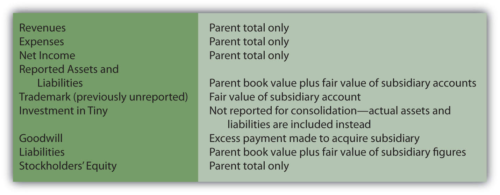
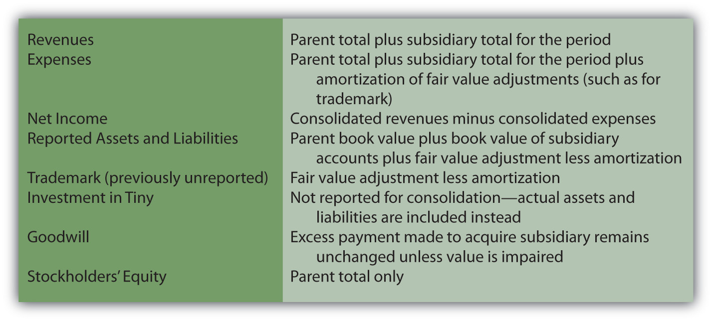
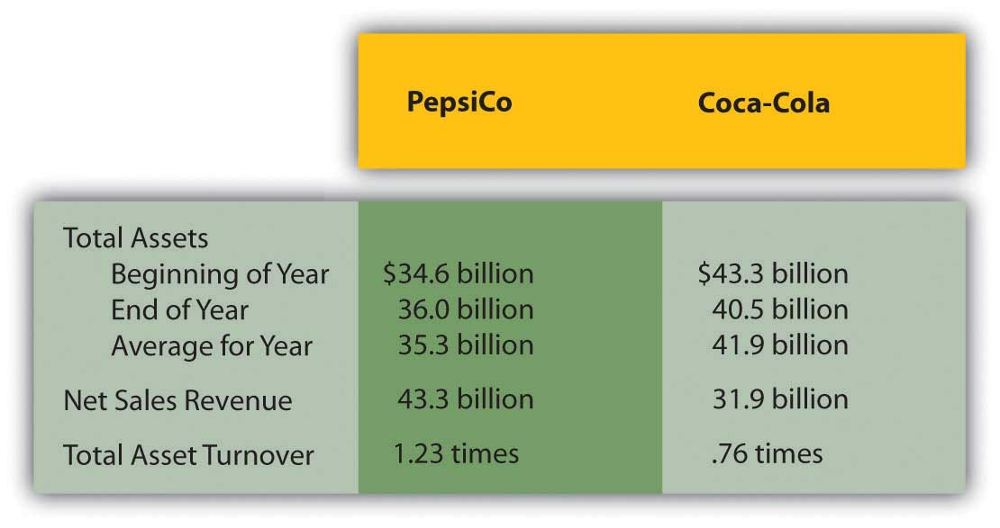

At the end of this section, students should be able to meet the following objectives:
Question: Many companies buy more than 50 percent of the stock of other companies in order to gain control. In a large number of these acquisitions, one company obtains all the outstanding shares of the other so that ownership is complete. If two companies are brought together to form a third, a merger has taken place. If one company simply buys another, the transaction is known as an acquisition. Thomson Financial reported that approximately 35,000 mergers and acquisitions took place around the world during 2006 with a total value of $3.5 trillion. The recent recession has reduced that trend a bit.
Such investments are often made to expand operations into new markets or new industries. Google, for example, acquired YouTube for $1.65 billion to move into the presentation of online videos. As discussed earlier in the coverage of intangible assets, one company might buy another to obtain valuable assets such as patents, real estate, trademarks, technology, and the like. Walt Disney’s purchase of Pixar and its digital animation expertise appears to fall into this category. Such transactions can also be made to eliminate competition or in hopes of gaining economies of scale. Sprint’s $35 billion merger with Nextel was projected to increase profits for the combined companies by lowering operating expenses while also reducing the number of competitors in the wireless communication industry.
To help explain the appropriate method of accounting for such investments, assume that Giant Company acquires 100 percent of Tiny Company. Obviously, control has been obtained. How is the reporting by Giant affected? Because over 50 percent of the stock was purchased, none of the previously described accounting methods are applicable. How does a company report the acquisition of another company where control is established?
Answer: According to U.S. GAAP, control is gained by the acquisition of over 50 percent of the voting stock of a company. The stockholders of Giant now control both Giant and Tiny. As a result, a business combination has been formed from the two previously independent companies. For external reporting purposes, consolidated financial statementsStatements that are prepared when one company holds control over another company. are required. Giant does not report an investment in Tiny account on its balance sheet as with the other methods described above. Instead, in consolidation, the individual account balances from each organization are put together in a prescribed fashion to represent the single economic entity that has been created. In simple terms, the assets, liabilities, revenues, and expenses of Tiny (the subsidiary) are consolidated with those of Giant (the parent) to reflect the united business.
Because such acquisitions are common, the financial statements reported by many well-known corporations actually include consolidated financial data from hundreds of different subsidiaries where control has been gained over a number of years. As just one example, Cisco Systems made approximately sixty acquisitions of other companies between 2000 and 2007. Subsequently, the published financial statements for Cisco Systems included the revenues, expenses, assets, and liabilities of each of those subsidiaries.
Consolidation of financial statements is one of the most complex topics in all of financial accounting. However, the basic process is quite straightforward.
Subsidiary revenues and expenses. The revenues and expenses of each subsidiary are included in consolidated figures but only for the period after control is gained. Consequently, if Giant obtains Tiny by buying 100 percent of its stock on April 1, a consolidated income statement for these two companies will contain no revenues and expenses recognized by Tiny prior to that date. Income statement balances accrued under previous owners have no financial impact on the new owner, Giant. Only the revenues and expenses of this subsidiary starting on April 1 are included in the consolidated totals calculated for Giant Company and its consolidated subsidiary.
Subsidiary assets and liabilities. Consolidation of subsidiary assets and liabilities is a more complicated process. On the date of the takeover, a total acquisition price is determined based on the fair value surrendered by the parent in order to gain control. A search is then made to identify all the individual assets and liabilities held by the subsidiary at that time. As discussed in the previous chapter, the parent recognizes all subsidiary assets (1) that provide contractual or legal rights or (2) in which the asset can be separated and then sold. Fair value is established and recorded for each as if the parent were acquiring them individually. A transaction has taken place that brings all of those subsidiary assets and liabilities under the control of the parent company. Consolidation values are reported as if they were bought separately by the parent.
Also, as explained previously, if the acquisition price is more than the total fair value of all these identifiable assets and liabilities, the intangible asset goodwill is reported for the difference. As a going concern, a total value is usually attributed to a company that exceeds the individual values of its assets and liabilities. Having loyal customers and trained employees, for example, helps a company generate more profits than its assets could otherwise earn. When a company is being bought, such anticipated profitability usually leads to an increase in the negotiated price. This excess amount necessitates the recognition of goodwill on the consolidated balance sheet.
Link to multiple-choice question for practice purposes: http://www.quia.com/quiz/2092973.html
Question: To illustrate the consolidation process, assume that Tiny has earned revenues of $800,000 and incurred expenses of $500,000 during the year to date. In addition, the company reports a single asset, land costing $400,000 but with a $720,000 fair value. The only liability is a $300,000 note payable. Thus, the company’s net book value is $100,000 ($400,000 land less $300,000 note payable). Tiny also owns the rights to a well-known trademark that has no book value because it was developed many years ago at little or no cost. However, it is now estimated to be worth $210,000.
The assets and liabilities held by Tiny have a net fair value of $630,000 ($720,000 land plus $210,000 trademark less $300,000 note payable). Because the company has been extremely popular and developed a large customer base, Giant agrees to pay $900,000 to acquire all the outstanding stock. If consolidated financial statements are created at the time of a corporate acquisition, what figures are reported by the business combination?
Answer: In consolidating Giant and its subsidiary Tiny at the date of this acquisition, neither the subsidiary revenues of $800,000 nor its expenses of $500,000 are included. Their financial impact occurred prior to the takeover by Giant; those profits benefitted the previous owners. Therefore, only the revenues and expenses reported by Giant make up consolidated income statement totals determined on the day the parent acquires the subsidiary.
At the same time, consolidated balance sheet totals will not show any “investment in Tiny Company” as in the other methods demonstrated above. Instead, Tiny’s land is added to Giant’s own totals at its $720,000 fair value. The trademark is consolidated at $210,000 to reflect the amounts paid by Giant to acquire ownership of the subsidiary. The note payable is added to the consolidated figures at $300,000, which was its fair value as well as its book value. Subsidiary assets and liabilities are included in consolidated totals as if purchased by the parent. Mechanically, a $320,000 increase is made to the land account while $210,000 is recorded to recognize the value of the trademark.
The acquisition price of $900,000 paid by Giant exceeds the net value of the subsidiary’s identifiable assets and liabilities ($610,000) by $290,000. In consolidation, any excess acquisition payment is assumed to represent goodwill and is reported as an intangible asset.
Figure 12.16 Consolidated Totals—Date of Acquisition
Link to multiple-choice question for practice purposes: http://www.quia.com/quiz/2093014.html
Question: On the date of acquisition, subsidiary revenues and expenses are omitted from consolidation totals but assets and liabilities are included at fair value. Any excess payment made by the parent in purchasing the subsidiary is reported as goodwill. In subsequent consolidations, what accounting is made of the subsidiary’s revenues, expenses, assets, and liabilities?
Answer: For subsequent balance sheets created after a business combination is formed, the book value of each of the subsidiary’s assets and liabilities is added to the book value of those same accounts within the parent’s financial records. However, the initial adjustments made at the date of acquisition to establish fair value must continue to be included because they represent a cost incurred by Giant when the $900,000 payment was made to acquire Tiny Company.
Thus, in future consolidations of these two companies, the $320,000 adjustment recorded to the land account will be present as will the $210,000 portion of the payment assigned to the subsidiary’s trademark and the $270,000 goodwill balance. Those costs were not recognized by Tiny but were incurred by Giant at the time of acquisition and must be reflected in the ongoing reporting of those assets.
Recognition of these subsequent adjustments creates one final concern. A trademark has a finite life. Thus, the $210,000 cost paid by the parent and attributed to this asset must be amortized over time. This additional expense is only recognized in the consolidation process since it relates to the purchase of Tiny and not to the operations of either company. Neither land nor goodwill has a finite life so amortization is not appropriate for those purchase price adjustments. As discussed previously, these assets are checked periodically for impairment of value.
Subsequently consolidated income statements report the parent’s revenues and expenses plus subsidiary amounts but only those recognized since the acquisition. In addition, the amortization of acquisition cost adjustments, such as for the trademark, will be recognized within the consolidation as an expense.
Figure 12.17 Consolidated Totals—Subsequent to Date of Acquisition
Link to multiple-choice question for practice purposes: http://www.quia.com/quiz/2093016.html
Question: Chapter 12 "In a Set of Financial Statements, What Information Is Conveyed about Equity Investments?" completes coverage of the assets reported by a company on its balance sheet. In earlier chapters on receivables, inventory, and property and equipment, vital signs were computed and explained as figures and ratios often used in evaluating a company—especially its financial health and future prospects. Do any similar vital signs exist for assets as a whole that decision makers typically use as part of an overall evaluation?
Answer: A company controls a specific amount of assets. Most investors and other decision makers are interested in how effectively management was able to use these resources. Individuals who study companies search for signs that an appropriate level of income was generated from the assets on hand.
Total asset turnover. Total asset turnoverA ratio used to measure the efficient use of assets; it is computed by dividing sales revenue by average total assets for the period. is one such figure. It simply indicates management’s efficiency at generating sales. Sales must occur before profits can be earned from normal operations. If assets are not well used to create sales, profits will probably never arise.
total asset turnover = sales revenue/average total assetsFor example, here is information reported for 2008 by PepsiCo Inc. and The Coca-Cola Company. Based on this information, the total asset turnover can be computed for each company.
Figure 12.18 2008 Comparison of PepsiCo Inc. and The Coca-Cola Company
Return on assets. Probably one of the most commonly used vital signs employed in studying the financial health of a company is return on assetsA ratio used to measure the profitable use of assets, it is computed by dividing net income by average total assets for the period., often known as ROA. It is simply net income divided by average total assets and is viewed by many as an appropriate means of measuring management’s efficiency in using company resources.
return on assets (ROA) = net income/average total assetsSome analysts modify the income figure in this computation by removing interest expense to eliminate the impact of different financing strategies.
For 2008, PepsiCo reported net income of $5.1 billion so that its ROA for the year was 14.4 percent ($5.1 net income/$35.3 average total assets). For the same period, The Coca-Cola Company reported net income of $5.8 billion for an ROA of 13.8 percent ($5.8/$41.9).
Companies often attempt to obtain control over other companies for many reasons including gaining access to valuable assets and eliminating competition. According to U.S. GAAP, control is established by acquiring over 50 percent of the ownership shares. At that point, consolidated financial statements must be prepared bringing together the financial accounts from both companies. For the subsidiary, only revenues and expenses since the takeover are included. In consolidating the assets and liabilities of the subsidiary, any difference on the date of acquisition between fair value and book value is computed and assumed to represent an additional cost incurred by the parent. If the asset or liability has a finite life, this amount is then included in all subsequent consolidations after periodic amortization is removed. Goodwill is reported for any unexplained excess payment made in acquiring control over the subsidiary. Many analysts compute total asset turnover and return on assets (ROA) in evaluating the efficiency of management’s use of company assets.
Following is a continuation of our interview with Kevin G. Burns.
Question: For the year ended December 31, 2008, Yahoo! Inc. reported its net income as approximately $424 million. The company also disclosed comprehensive income of only $213 million. Does it disturb you that this one company reports two separate income figures and they can be so significantly different? Or do you find disclosing income in two distinct ways to be helpful when you analyze a company like this?
Kevin Burns: Actually I think the idea of disclosing income in two different ways makes sense. Having said that, if I were a shareholder of Yahoo! I would want to ask, Why these numbers are so far apart? What exactly is included in (or excluded from) each of these income figures? Is the company’s core business sound? This question is probably best answered by net income. The reduction in arriving at comprehensive income is likely to have come from losses in the value of available-for-sale investments and from holding foreign currency balances. Is management distracted by trying to manage a large investment portfolio? How much of the difference comes from currency rate changes, and is there a way to hedge this volatility to reduce the impact? If there is a way to hedge the risk, why did company officials not do so?
In sum, the reason I like including both income numbers is that anything that increases disclosure is a positive, especially when investing money. The more transparency the better is my feeling. Then, investors can make up their own minds as to management’s competence and the success of the overall business of the company.
Joe talks about the five most important points in Chapter 12 "In a Set of Financial Statements, What Information Is Conveyed about Equity Investments?".